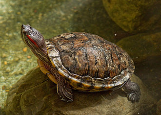
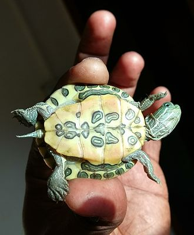

What is Red-eared Slider?
The red-eared slider (Trachemys scripta elegans), also known as the red-eared terrapin, red-eared slider turtle, red-eared turtle, slider turtle, and water slider turtle, is a semiaquatic turtle belonging to the family Emydidae. It is a subspecies of the pond slider. It is the most popular pet turtle in the United States and is also popular as a pet across the rest of the world.[2] Because of this, therefore, they become the most commonly traded turtle in the world.[3] Red-eared sliders are native to the southern United States and northern Mexico, but have become established in other places because of pet releases, and have become an invasive species in many areas where they outcompete native species. The red-eared slider is included in the list of the world's 100 most invasive species[4] published by the IUCN.
